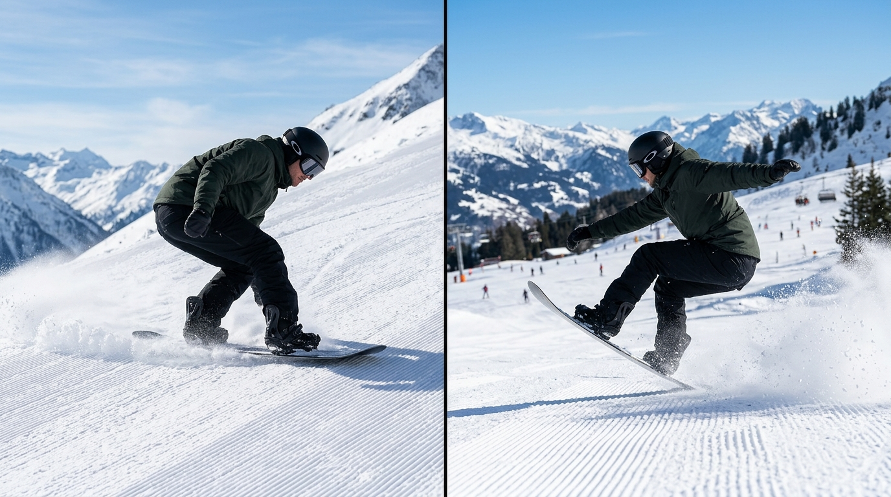
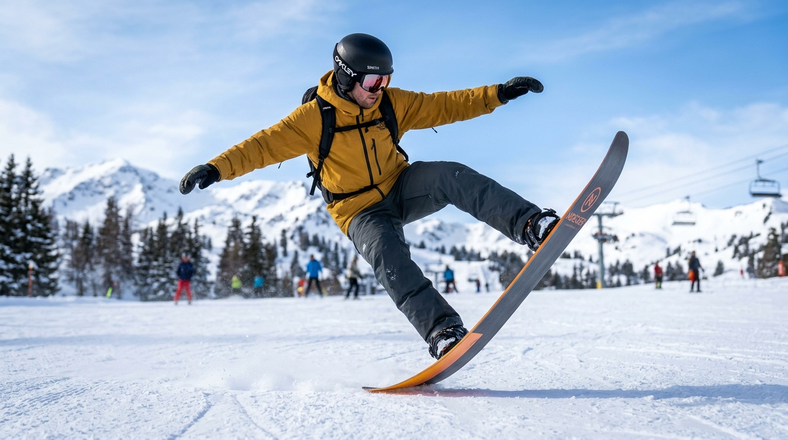

原稿圖片 01｜來源待核實
原稿標題（未核實）：真人實拍對照：Toeside 前刃 vs Heelside 後刃關節屈曲與雪花噴射
原稿說明（未獨立核實）：高速快門（1/2000s）真人實拍對比前刃與後刃刻滑時的膝踝屈曲角度、骨盆折角（Angulation）與視線引導，完美呼應 MOD-03 生物力學槓桿對稱訓練。
本 repo 收錄多個單板滑雪課程模組與互動元件。頁面原有的人員資格、審查簽核、外部體系關係及技術內容宣稱尚未獲獨立佐證，不能視為已驗證或官方認可。

下方體系名稱及描述來自 repo 原稿，尚未取得相關機構的確認或背書；不能由此推定作者／審查者持有證照，也不等同官方課綱。
此區為互動播放器與參數實驗室原型；影片來源、播放品質、影格率及模擬數值尚未完成獨立核驗。呈現的參數不是訓練標準或安全保證。
拖動下方滑桿改變滑手姿態，即時計算有效刻滑半徑 \(R_{\text{eff}}\)、平衡傾角 \(\theta_{\text{eq}}\) 與逆刃 (Catching an Edge) 臨界值：
下方保留 repo 原稿供審查。公式、數值、動作步驟、機構對照及提示未完成逐項獨立核驗，不是教練、安全或醫療指引；請勿只依本頁嘗試高風險動作，練習前先向合格教練確認。
平花（Ground Tricks / Buttering）絕非死記硬背招式名稱，而是由 8 大基礎原子技能 (Atomic Skills) 透過 4 大發力與動量銜接邏輯（儲能彈跳、反向預轉蓄力、刃對點轉換、雙軸重心鎖定） 組裝而成。點擊左側基礎原子技能可篩選包含該元素的進階招式，點擊右側招式卡片可檢視完整 Phase 1–Phase 4 重心百分比、用刃角度与失敗防卡刃解析。
repo 的 Git tree 含有 `assets/media/images/*.jpg` 與 `assets/media/videos/*.mp4` 檔名；這不證明素材為真人拍攝、來源正確、取得授權、可正常播放或示範內容正確。下方原稿標題與說明也尚未獨立核實，請勿把它們當成已驗證的動作範例。

原稿說明（未獨立核實）：高速快門（1/2000s）真人實拍對比前刃與後刃刻滑時的膝踝屈曲角度、骨盆折角（Angulation）與視線引導，完美呼應 MOD-03 生物力學槓桿對稱訓練。

原稿說明（未獨立核實）：展示真實滑手在晨間燈芯絨雪道（Corduroy）透過極限傾角與外向傾控制，讓雪板有效鋼邊切出零滑移的單一鉛筆線軌跡（Pencil-Line Trench）。

原稿說明（未獨立核實）：真人滑手將質心（COM）精準推過前腳固定器外側，前膝微屈、後腿上提使板尾離地，清楚展現懸臂樑彈性位能儲存狀態。

原稿說明（未獨立核實）：高速捕捉日本グラトリ（Gra-tri）流暢系招式精髓：後刃板尾深壓建立支點（Tail Block），搭配上半身預轉與手部平衡，瞬間釋放板頭迴旋動量。

原稿說明（未獨立核實）：真人滑手於 Kicker 跳台拋物線頂點主動屈膝收腿（Tuck）縮小轉動慣量 \(I\)，並以手抓握兩腳間前刃穩定空中三軸姿態，視線鎖定 Sweet Spot 落地斜坡。

原稿說明（未獨立核實）：於阿爾卑斯高山野雪粉雪碗（Backcountry Bowl）中，滑手利用板頭動壓升力（Planation Lift）與三維垂直壓縮回彈，激起巨幅冷煙粉雪浪花。
目前 repo 沒有足以獨立核實專家身分／證照、審查範圍與日期、簽核紀錄或外部機構背書的證據。原稿內的審查敘述不是驗收證明；技術與安全內容仍須由可靠來源及合格教練逐項審核。
p_01_01–p_10_04）與 40 項實戰技能（s_01_01–s_10_04），經 CASI/AASI/SBINZ/JSBA/BASI 考官組逐一核對，左側呈現真人四階段連續動作序列（Step 1 ➔ Step 4），右側同步呈現「✅ 正確真人連續動作」與「❌ 錯誤逆刃/折腰/洗刃連續動作」動態對比。
step_01_01–step_10_04）與常見錯誤及專家 Tips（err_01_01–err_10_04），以及平花 8 大原子技能（atomic_01–08）、12 大組合招式主體（combo_01–12）、Phase 1–4 步驟（combo_step_01–12）與防卡刃 Tips（combo_err_01–12），全數配備專屬圖解與連續動作 MP4 影片。
#070B14 / #0B1120）搭配冷光青（#38BDF8 代表速度與 COM 軌跡）及暖陽橘（#FB923C 代表壓力、BOS 與立刃角）；同時提供頂部一鍵切換「雪地強光高對比模式」，解決雪場陽光直射手機螢幕反光問題。
JetBrains Mono）標示角度與配重比，讓學員 5 秒內抓到核心指標。
素材檔案存在不代表真人拍攝、來源、授權、可播放、正誤對照或教學內容已核實。